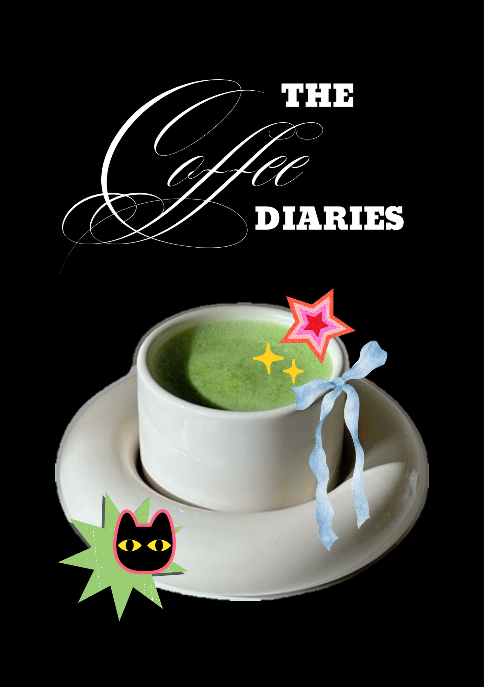
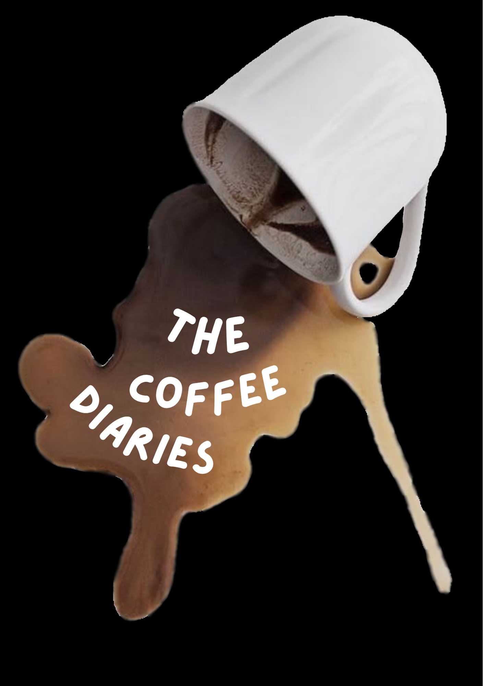
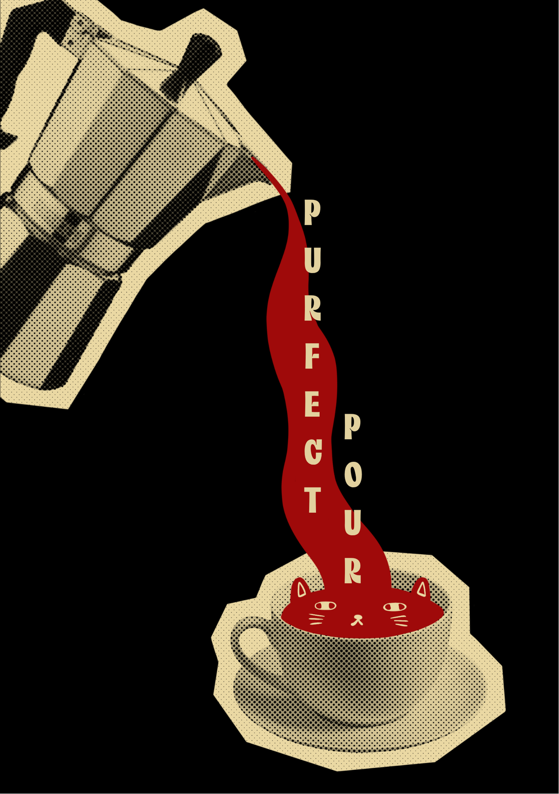
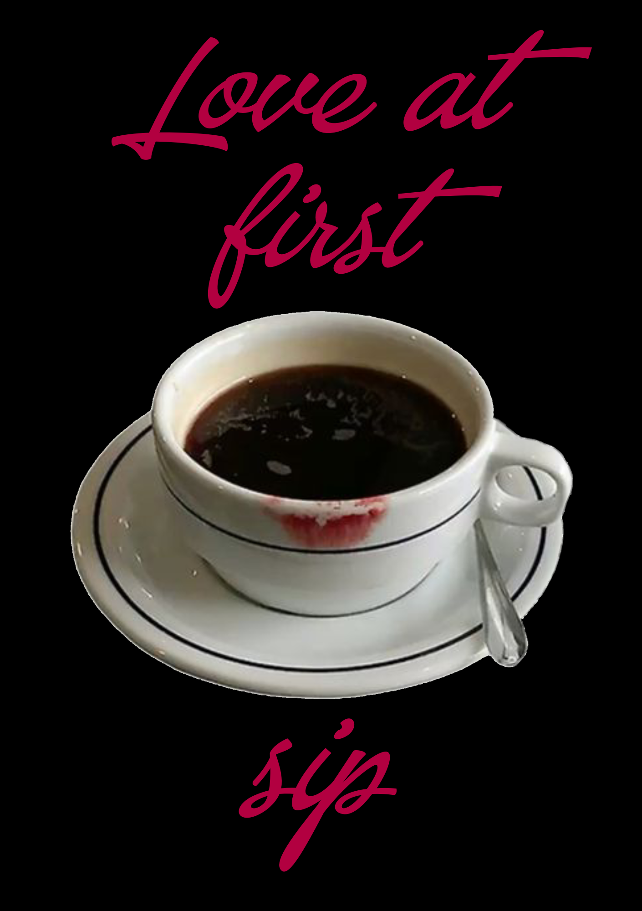
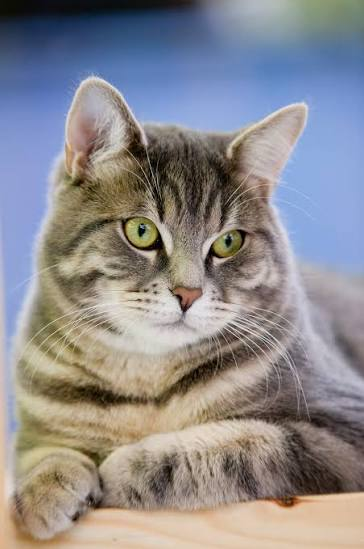

Osobné portfólio 2026
01 — 03
Katarína
Kendrová.
Ahoj, teší ma.
Som Katarína, tvorím digitálne produkty, ktoré dobre vyzerajú a ešte lepšie fungujú.
Pozrieť projektyOtvorený/á novým spoluprácam
Digitálna tvorba Slovensko
Posuň sa nižšieVýber z tvorby 2024—26
Projekty.
Nápady, ktoré dostali
digitálnu podobu.




Štyri grafické návrhy pre obálku knihy, ktoré som vytvorila v rámci projektu "Recepty na kávu"
Pár slov o mne 01
Zvedavosť
je môj kompas.

Verím, že dobrý dizajn nie je len pekný. Je jasný, užitočný a zanechá pocit, ku ktorému sa chceš vrátiť.
Som Katarína Kendrová a venujem sa [doplň svoju oblasť]. Rád/rada prepájam nápady s detailmi a premieňam ich na veci, ktoré ľuďom uľahčujú deň.
Čomu sa venujem[Dizajn / vývoj / fotografia]
Kde ma nájdešSlovensko · aj na diaľku